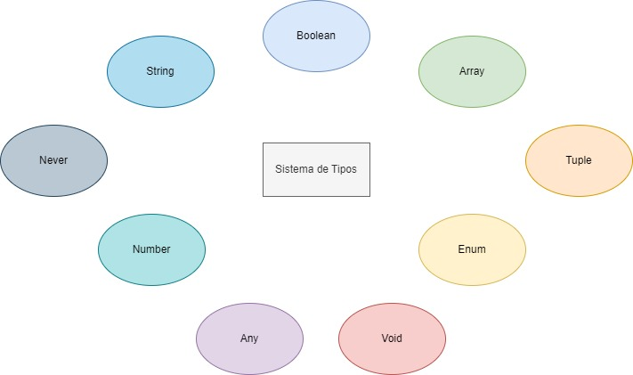

Typescript
Introducción
TypeScript es un lenguaje de programación libre y de código abierto desarrollado y mantenido por Microsoft. Es un superconjunto de JavaScript, que esencialmente añade tipos estáticos y objetos basados en clases. Anders Hejlsberg, diseñador de C# y creador de Delphi y Turbo Pascal, ha trabajado en el desarrollo de TypeScript.
TypeScript es usado para desarrollar aplicaciones JavaScript que se ejecutarán en el lado del cliente o del servidor, o extensiones para programas (Node.js y Deno). TypeScript extiende la sintaxis de JavaScript, por tanto cualquier código JavaScript existente debería funcionar sin problemas. Está pensado para grandes proyectos, los cuales a través de un compilador de TypeScript se traducen a código JavaScript original. TypeScript soporta ficheros de definición que contengan información sobre los tipos de librerías JavaScript existentes, similares a los ficheros de cabeceras de C/C++ que describen la estructura de ficheros de objetos existentes. Esto permite a otros programas usar los valores definidos en los ficheros como si fueran entidades TypeScript de tipado estático. Existen cabeceras para librerías populares como jQuery, MongoDB y D3.js, y los módulos básicos de Node.js.
El compilador de TypeScript está escrito asimismo en TypeScript, compilado a JavaScript y con Licencia Apache 2. TypeScript se incluye como lenguaje de programación de primer nivel en Microsoft Visual Studio 2013 Update 2 y posteriores, junto a C# y otros lenguajes de Microsoft. Una extensión oficial permite a Visual Studio 2012 soportar también TypeScript.
¿Cómo funcionan los tipos?
El sistema de tipos de Typescript realiza una formalización de los tipos de Javascript, mediante una representación estática de sus tipos dinámicos. Esto permite a los desarrolladores definir variables y funciones tipadas sin perder la esencia de Javascript. Poder definir los tipos durante el tiempo de diseño nos ayuda a evitar errores en tiempo de ejecución, como podría ser pasar el tipo de variable incorrecto a una función. Además de los tipos String y Number otros los siguientes tipos básicos.
